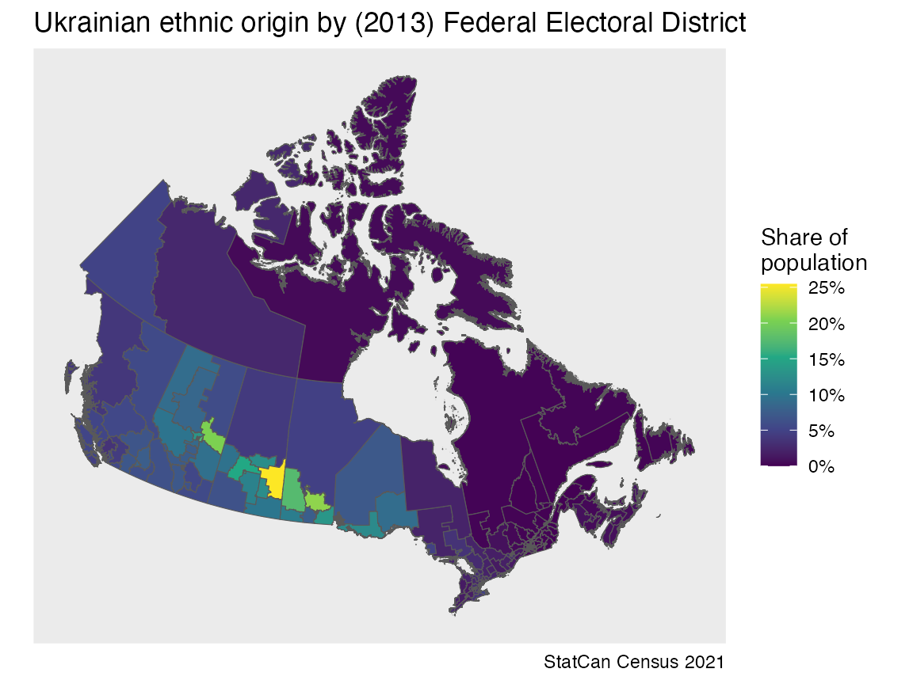

Some census datasets have not been imported into CensusMapper, and
thus aren’t available via the get_census() function. But
the data can be queried directly from the Statistics
Canada Web Data Service for the 2021 census, as well as geographic
boundary files.
Word of caution
The StatCan census WDS is not a stable API, the meaning of the internal identifiers used to query have changed in the past, and may change again in the future. Use with extreme caution. The same call may give different results at different points in time. Moreover, the API server is sometimes unavailable.
Ukrainians by Federal Electoral Districts
As an example we access the share of people with Ukrainian ethnic origin at the Federal Electoral District level. Only the 2013 Federal Electoral District boundaries are currently available from Statistics Canada, since we want to map the data we will work with those in favour of the updated 2023 boundaries. For this we need to specify the version of the data we want to access, “1.3” for the 2013 boundaries vs the latest “2.0” for the 2023 boundaries.
fed_version = "1.3"Next we need to find the StatCan Characteristic IDs for our characteristic of interest. For this we download the metadata, extract the characteristics, locate the base characteristic for ethnic origin and the entry referencing “Ukrainian” that’s a descendant of the base characteristic.
metadata <- get_statcan_wds_metadata("2021","FED",version=fed_version)
characteristics <- metadata |>
filter(`Codelist en`=="Characteristic") |>
mutate(across(c(ID,`Parent ID`),as.integer))
ethnic_base <- characteristics |>
filter(grepl("Total - Ethnic",en))
ukranian <- characteristics |>
filter(grepl("Ukrainian",en), `Parent ID`==ethnic_base$ID)
selected_characteristics <- bind_rows(ethnic_base,ukranian)
selected_characteristics |> select(ID,en)
#> # A tibble: 2 × 2
#> ID en
#> <int> <chr>
#> 1 1684 Total - Ethnic or cultural origin for the population in private househo…
#> 2 1694 UkrainianWe can also get the geographic identifiers for the federal electoral districts from the metadata.
data <- get_statcan_wds_data(dguids,members=selected_characteristics$ID,
gender="Total",version=fed_version)The data comes enriched with metadata to make working with it easier,
in particular the CHARACTERISTIC_NAME column contains plain
language names. Now we can transform the data to compute
percentages.
plot_data <- data |>
select(DGUID=GEO_DESC,Name=GEO_NAME,name=CHARACTERISTIC_NAME,value=OBS_VALUE) |>
pivot_wider() |>
mutate(Share=Ukrainian/`Total - Ethnic or cultural origin for the population in private households - 25% sample data`)Now we can visualize the data, here are the top 20 Federal Electoral Districts by share of the population with Ukrainian heritage.
plot_data |> slice_max(Share,n=20) |>
ggplot(aes(y=reorder(Name,Share),x=Share)) +
geom_bar(stat="identity",fill="steelblue") +
scale_x_continuous(labels=scales::percent) +
labs(title="Ukrainian ethnic origin",
y="Federal electoral district (2013 Represenation Order)",
x="Share of population in private households",
caption="StatCan Census 2021")
To map the data we have to get the geographies.
fed_geos <- get_statcan_geographies("2021","FED")With these we can join on our census data and map it.
fed_geos |>
left_join(plot_data,by="DGUID") |>
ggplot(aes(fill=Share)) +
geom_sf() +
scale_fill_viridis_c(labels=scales::percent) +
coord_sf(datum=NA) +
labs(title="Ukrainian ethnic origin by (2013) Federal Electoral District",
fill="Share of\npopulation",
caption="StatCan Census 2021")